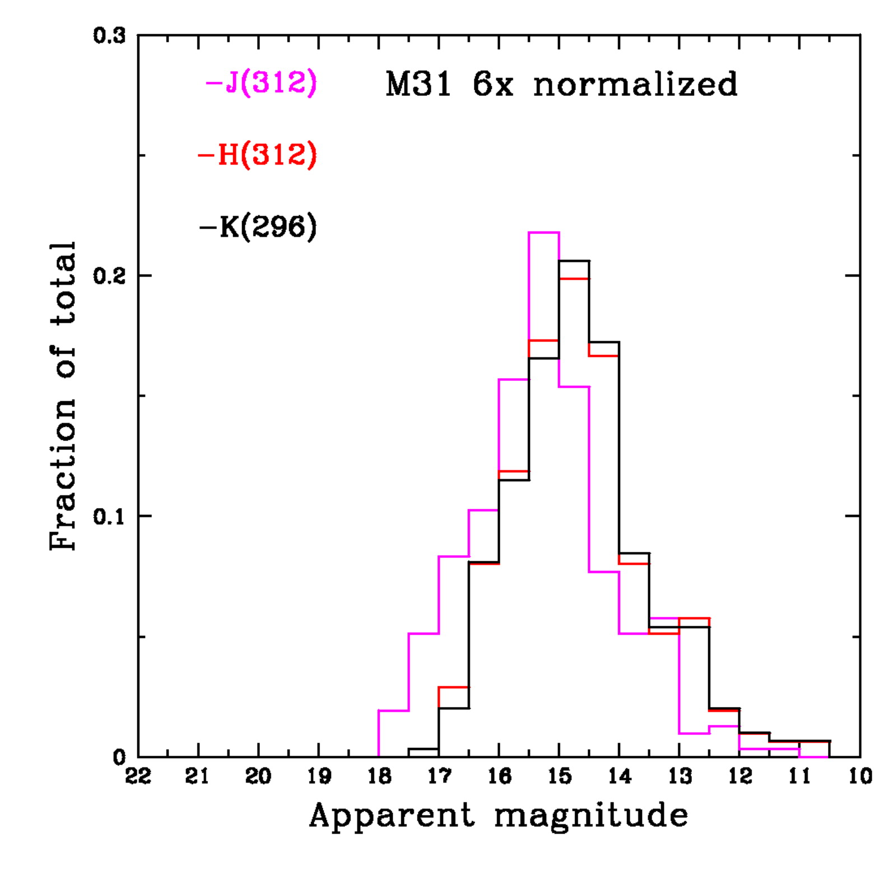

| |
Globular cluster luminosity
functions
The CASt dataset
glob_clus.dat
glob_clus.csv
Astronomical background
A globular cluster (GC) is a collection of 104-106
ancient stars concentrated into a tight spherical structure
structurally distinct from the field population of stars.
Historically, studies of individual stars within GCs were crucial for
unravelling the structure and evolution of stars, particularly their
red giant phases. Stellar evolution models show that most GCs
were born billions of years ago when the galaxies were young.
Understanding the collective global properties of GCs is now a
challenge, as they probably are a small remnant of a once-larger
population of clusters, most of which have been disrupted.
Tracing the populations of GCs in nearby galaxies can give clues
regarding the different evolution of galaxies including galactic star
formation histories (evidenced through GC metallicities), cannabilism
(a large galaxy will acquire GCs from smaller merging galaxies), and
galactic structure (the GC spatial distribution should reflect the
gravitational potential of the galaxy). GC samples are relatively
small; even large galaxies like our Milky Way only have hundreds.
These issues are reviewed in a monograph "Globular Cluster
Systems" by K. Ashman & S. Zepf (1998) as well as many papers and
conferences.
The distribution of GC luminosities (i.e. the collective
brightness of all of its stars) is known as the globular cluster
luminosity function (GCLF). For unknown reasons, the shape of the
GCLF appears to be lognormal in shape with a universal (though with
some dependences on covariates such as metallicity) mean and standard
deviation. The peak of the GCLF has thus been used as one of
several methods to measure the distances to galaxies. Detailed
study is quite complicated: establishing luminosities from observed
brightnesses requires corrections for absorption by interstellar dust;
luminosities appear to be statistically linked to metallicities; and
halo vs. disk GC populations may systematically differ. It is
also difficult to obtain complete samples of GCs both in other galaxies
as surveys are typically "magnitude limited"; i.e. truncated in
observed brightness which gives a truncatation in intrinsic
luminosity. A multivariate database for 150 GCs in the Milky Way
Galaxy (MWG) is provided by William Harris at
http://www.physics.mcmaster.ca/Globular.html. Over 400 Milky Way
GCs are known.
Dataset
Here we treat the relatively simple univariate datasets of
brightnesses for 81 GCs in our MWG and 360 GCs in the nearest large
spiral galaxy, the Andromeda Galaxy (M 31). We use the
near-infrared K band magnitudes which are less vulnerable to
interstellar absorption than visual band magnitudes. Measurement
errors are small and are ignored here. The columns are: GC name,
K-band magnitude. For the MWG, we give the absolute magnitudes
which is an inverted logrithmic unit for intrinsic luminosity). For M
31, we give the apparent magnitude which is offset from absolute
magnitude by the "distance modulus", measured to be 24.44 +/- 0.1 for M
31. In both cases, K band photometry is obtained from the 2MASS
All-Sky Survey and is available for only a (biased) subset of the full
MWG and M 31 GC populations.
The datasets, figures and numerical results below are obtained
from the following paper:
Nearby Spiral Globular Cluster Systems I: Luminosity
Functions; Nantais J.B., Huchra J.P., Barmby P., Olsen K.A.G.,
Jarrett T.H., Astronomical Journal 131, 1416-1425 (2006)

Statistical exercises
- Assuming the MWG is complete and unbiased, fit a normal
model. Test whether the model is valid.
- Test whether the M 31 sample is consistent with a normal
distribution (black histogram in figure above). First assume the
sample is complete and unbiased. Second, truncate the sample for
magnitudes K>15.5 (the completeness limit of the 2MASS survey) and
compute the normal model using maximum likelihood or moment
techniques. See Secker & Harris (Astron J 105, 1358 1993) and
"Truncated and Censored Samples" Theory and Applications (Clifford
Cohen, 1991) for methdological discussions.
- Apply parametric and nonparametric two sample tests to
establish whether the MWG and M 31 GC LFs are consistent with each
other.
- Calculate the distance modulus of M31 and compare with the
value 24.41 +/- 0.1 obtained with Cepheid variable distances.
|